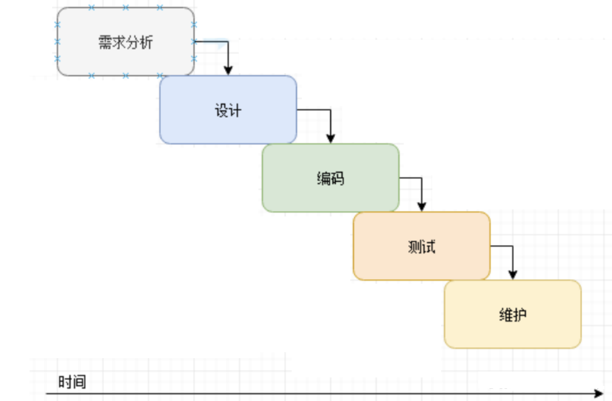
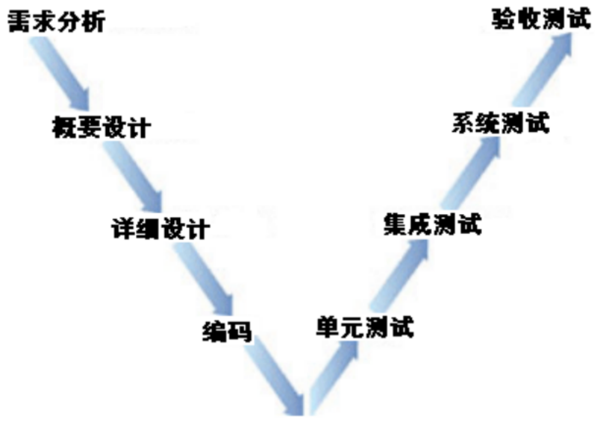
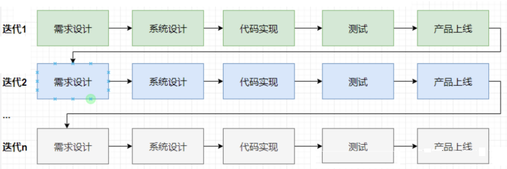

所谓的软件开发模型，其实就是开发软件所经历的各个阶段，一般都会包括：需求->设计->编码-测试-运行维护。当然，不同的开发模型会稍有不同，每个模型都有其使用场景以及对应的公司使用，每个模型都有其优缺点，同时每个模型所解决问题的侧重点不同。
目前已经存在的开发模型有很多，如：
瀑布模型 V模型 W模型 H模型 螺旋模型 迭代模型 增量模型 敏捷模型
以上模型中，在企业中可能常使用到的就是瀑布模型，迭代模型，瀑布模型，和敏捷模型。接下来我们重点介绍如下的四种模型。
所谓的瀑布模型，其实是从其形状看着像瀑布，故称之为瀑布模型。如下图：
瀑布模型主要包括的阶段有： 需求->设计->编码->测试->维护。
瀑布模型有如下的几个特点：
首先，瀑布模型的开发方式是线性开发，也就是必须是上一个阶段完成以后且审核通过才能进入到下一个阶段。
其次，在每个阶段中，都会产生大量的文档，这些文档不仅多而且都比较重，有很多文档可能光写一个文档就的好几天，比如写一个测试计划十几页甚至更多。
最后，它的整体开发周期长，一个项目少则两个月，多则就会按年去计算。
那么以上的开发方式会导致怎样的结果呢 ？我们可以通过三个维度去衡量，分别是：
产品需求： 从整体来说，此种模式下开发出来的软件适应需求的变化是很差的，由于其开发周期长，往往到了后期开发的功能很有可能并非是用户想要的，但是由于已经到了后期或者已经开发完毕了，那么再去调整的成本就会很高。
产品质量：开发出来的产品质量也是较差的，主要原因在于其公司对成本的控制。
公司成本及对技术要求： 从公司角度来说，公司的成本可能相对是最低的，同时也对技术要求也不是很高。
以上几点可以说明，使用瀑布模型开发可能对公司来说，可能就是看重的是它的成本低廉。
最后，我们要讨论的是哪些类型的公司会使用瀑布模型呢 ？ 主要是一些做项目性的公司，公司没有自己的产品，主要是给别人开发软件。同时因为其成本原因，所以公司对人员的技术上要求也不是很高。
所谓的V模型，也是从其形状来看像个V字，故起名为V模型。
V模型主要包含的阶段有： 需求分析->概要设计->详细设计->编码->单元测试->集成测试->系统测试->验收测试
主要的不同点就是v模型会注重设计和测试，测试划分的更细了，可以简单的理解为v模型测试需要做白盒测试，而瀑布模型不需要。
同样的V模型也有如下的几个特点：
首先，V模型的开发方式是线性开发，也就是说必须是上一个阶段完成以后且审核通过才能进入到下一个阶段。
其次，在每个阶段中，都会产生大量的文档，这些文档不仅多而且都比较重，有很多文档可能光写一个文档就的好几天，比如写一个测试计划十几页甚至更多。
最后，它的整体开发周期长，一个项目少则三个月，多则就会按年去计算。
那么以上的开发方式会导致怎样的结果呢 ？我们可以通过三个维度去衡量，分别是：
产品需求： 从整体来说，此种模式下开发出来的软件需求的适应性也是很差的，由于其开发周期长，后期变更的成本就会很高。
产品质量：因为在V模型中更注重的设计和测试，所以开发出来的产品质量是有保证的。
公司的成本及对技术要求： 由于其对设计和测试比较重视，那么对于开发和测试这两个岗位比较重视，比如开发往往有专门的架构师进行设计，而测试中也必须有懂白盒测试的人员。
以上几点可以说明，使用V模型进行开发，可能有的特点是需求相对变化不大， 且要能保证质量这样的场景要求。
最后，什么样的公司会使用V模型呢 ？ 一般是为大型企业开发的大型软件，比如银行外包公司，开发银行相关的软件，开发一个版本可能就是一年半载，他们对流程要求很严，同时对质量也要求很高。
所谓的迭代模型，其实就是指通过不断迭代软件，使其产品逐渐变为想要的状态。
迭代模型包含的阶段有： 需求设计->系统设计->代码实现->测试->上线
同样的迭代模型也有如下的几个特点：
首先，迭代模型的开发方式是也线性开发，也就是必须是上一个阶段完成以后且审核通过才能进入到下一个阶段。
其次，由于将一整个系统拆分成若干个版本开发，每个版本开发的功能就会少很多，同时每个版本的需求也会根据上线后的反馈来进行实时调整，这就有利于适用需求的变化。
最后，它的上线后期会大大的缩短，而且在各阶段所产生的文档也尽量轻量化。
那么以上的开发方式会导致怎样的结果呢 ？我们可以通过三个维度去衡量，分别是：
产品需求： 通过迭代开发的软件，整体的需求适应性是很好的，能较好的适应市场需求变化。
产品质量：开发出来的产品质量一般。
公司成本及对技术要求： 由于注重的是迭代，所以整体来说对产品要求较高。
以上几点可以说明，使用迭代模型进行开发，主要是对产品有快速更新，并且要有一定质量要求的需求的公司。
最后，什么样的公司会使用迭代模型呢 ？一般就是互联网企业，往往互联网开发的都是自己产品，希望能尽快面向用户，并可以快速的获取用户反馈。
所谓的敏捷模型，是一种以人为核心、迭代、循序渐进的开发方法。即它是一种开发方法，也就是一种软件开发的流程，它会指导我们用规定的环节去一步一步完成项目的开发；而这种开发方式的主要驱动核心是人；它采用的是迭代式开发；
敏捷开发的特点就是：小步快跑，快速迭代。
所以，一般使用敏捷开发会在需求适应性以及质量上都很好，但同时它对整个团队的要求也很高。
那么，什么样的公司会使用到敏捷开发呢 ？ 一般都是互联网大厂，不过随着敏捷的普及，目前也陆续的深入各种中小企业了。
最后，我们将这几个模型放到一起做个对比，以看它们有什么区别 ？
| 开发模型 | 开发过程 | 特点 | 优缺点 | 开发周期 |
| 瀑布模型 | 将所有都完成以后才进入下一个阶段，依次类推。 | 产品串行开发 编写文档多而且重 开发周期长 | 优点：开发成本低 缺点：需求适应性差，质量差 | 2月+ |
| V模型 | 将所有都完成以后才进入下一个阶段，依次类推。 | 产品串行开发 编写文档多而且重 开发周期长 | 优点：质量稳定，质量好 缺点：需求适应性差，开发成本高 | 3月+ |
| 迭代模型 | 分成几次迭代进行，迭代功能包含用户反馈的信息 | 产品串行开发 编写文档少而且轻 开发周期相对短 | 优点：需求适应性好 缺点：没有明显缺点 | 2周~6周 |
| 敏捷模型 | 按用户故事进行拆分，然后进行快速迭代 | 产品串行开发 编写文档少而且轻 开发周期最短 | 优点：需求适应性好，且质量高 缺点：开发成本高 | 1周以内 |
{kind=link}